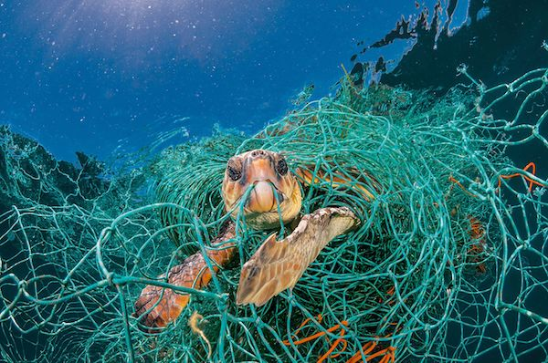

De nombreuses espèces de tortues sont aujourd’hui menacées d’extinction à cause de la pollution, du braconnage, du plastique dans les océans et de la destruction de leur habitat naturel.
Les œufs des tortues marines sont souvent volés ou mangés par des prédateurs, et les bébés ont peu de chances d'atteindre la mer. Protéger les plages de ponte et réduire nos déchets peut grandement améliorer leur survie.
Des associations comme Sea Turtle Conservancy agissent pour les protéger. Vous pouvez aider en adoptant des gestes simples au quotidien, comme ne pas laisser de déchets sur la plage.
